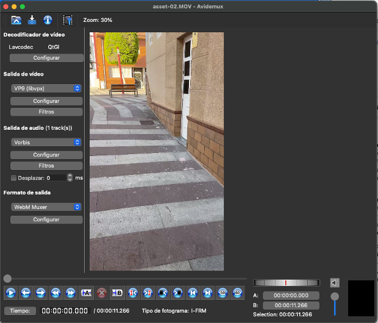
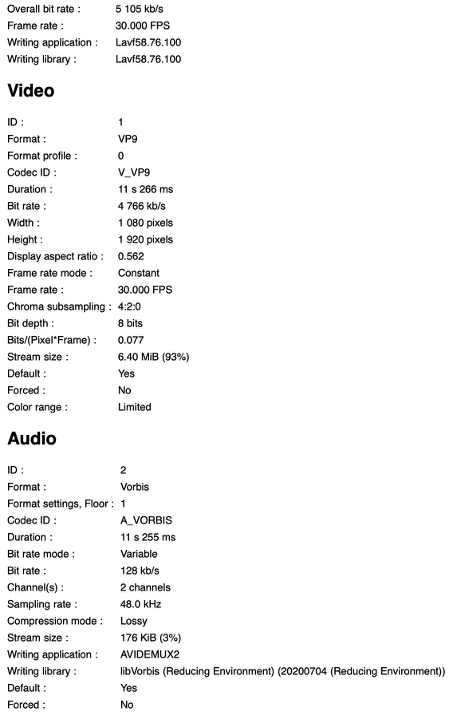
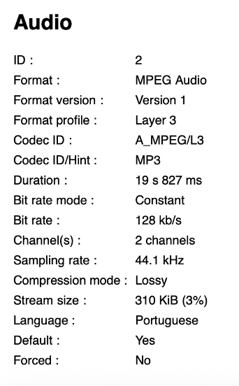
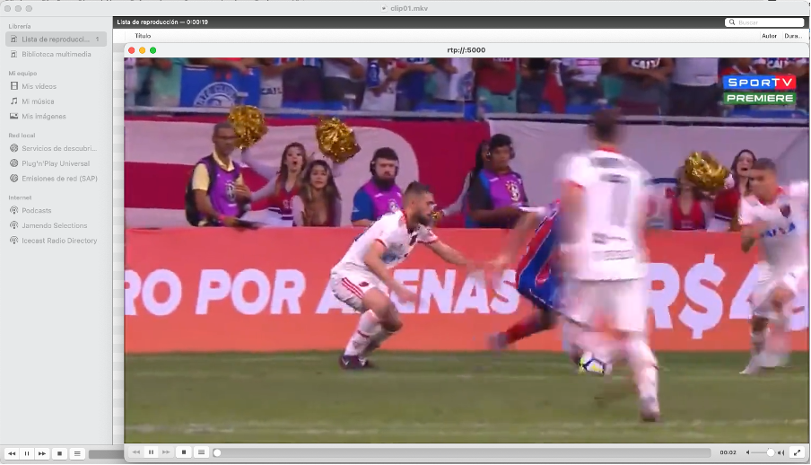
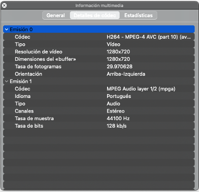
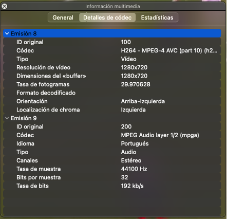
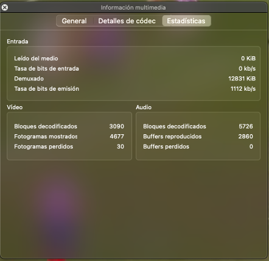

Ejercicio 1: Clip de vídeo incrustado en HTML 5
Tarea 1.1.
Para realizar este ejercicio, se va a aprovechar el vídeo creado para la PEC2, que contenía detalles y fue
realizado en movimiento. Por tanto, como referencia, se toma el fichero original, generado desde el móvil,
en formato MOV.
Observando la tabla [1], es evidente que elegir H.265 no sería muy factible, ya que tiene muy poca
compatibilidad con navegadores y, por otra parte, parecería una opción inmediata elegir el formato H.264
para obtener la compatibilidad máxima de navegadores. Sin embargo, analizando la información dada por [2],
podemos notar una opción interesante, que ofrece muy buena compatibilidad con navegadores y, a la vez,
ofrece mejor compresión que H.264: VP9. La falta de compatibilidad con Internet Explorer es una pequeña
desventaja, pero no es algo problemático considerando su bajo uso, contando con una cuota de mercado del
0,15% en 2024 (lo cual se puede ver descargando el CSV disponible en [3]). Por tanto, se puede optar por
utilizar VP9 para comprimir el vídeo, puesto que tiene un buen equilibrio entre compresión y compatibilidad
con navegadores.
Por otra parte, utilizar AV1 puede llegar a ser contraproducente, ya que, aún siendo mejor que VP9 para
comprimir, no tiene tanta compatibilidad de dispositivos [4].
Para hacer el codificado, se han empleado los siguientes ajustes:
 Ilustración 1: Configuración del codificador
Ilustración 1: Configuración del codificador

Ilustración 2: Configuración de Avidemux
Se ha elegido hacerlo en dos pasadas para mejorar calidad manteniendo la tasa de bits; una tasa de bits de
5000 kbps para mantener cierta calidad y, a la vez, ofrecer la posibilidad de que los usuarios puedan verlo
con una conexión de más baja velocidad; el tamaño de GOP por defecto, ya que no es un vídeo pensado tanto
para “saltarse” partes; la salida de vídeo VP9, como se ha mencionado; salida de audio Vorbis, ya que es
compatible con el contenedor WebM; y contenedor WebM, ya que, aunque tiene compatibilidad con otros
contenedores, al haberse desarrollado por el WebM Project, se puede dar por hecho que está más pensado para
este tipo de contenedor [5].
Observando ahora la información de MediaInfo, podemos afirmar que se ha codificado a la tasa de bits
deseada, aproximadamente:

Ilustración 3: Información de MediaInfo para el fichero “video.webm”
Tarea 1.2
La implementación más sencilla para ello sería la siguiente:
<video>
<source src="video.webm" type="video/webm">
</video>
Sin embargo, no tiene controles, ni tiene un tamaño más limitado. La característica principal de HTML5 es
que no requiere plugins externos para ver los vídeos y ofrece máxima compatibilidad; anteriormente, era muy
habitual utilizar Adobe Flash Player para visualizar vídeos, lo cual requería su instalación y
configuración. El soporte de este plugin, a causa del uso de HTML5, finalizó en 2021 [6].
Tarea 1.3
Se puede encontrar el HTML con el vídeo en [7]. Se observa un bajo retraso de visualización y una buena
calidad, aunque, como se ha mencionado en la tarea anterior, no tiene controles ni un tamaño aún; ello se
introducirá en la siguiente tarea.
Tarea 1.4
Se ha actualizado el fichero html, quedando de la siguiente manera:
<video width=270 height=480 controls autoplay muted loop>
<source src="video.webm" type="video/webm">
Your browser does not support the video tag.
</video>
De esta forma, ya el usuario puede controlar el vídeo, que tiene un tamaño más reducido y fácil de ver, y
que se reproducirá automáticamente (muteado) una vez se cargue, en bucle.
Nótese que, para que autoplay funcione, es necesario que el vídeo sea muteado por defecto [8].
Tarea 1.5
Observamos numerosos servicios adicionales que ofrecen los CDN. En este caso, nos centraremos en las
posibilidades que ofrece AWS.
Como se menciona en el enunciado, un ejemplo de servicio que ofrece AWS es Amazon Transcribe, para
generación de subtítulos [9]. Sin embargo, aprovechando este servicio para generación de una transcripción,
podemos traducirla con Amazon Translate [10], pasársela a Amazon Polly [11] y generar doblajes de forma
automática.
Otro ejemplo visto en el enunciado es el de detección de caras; para ello, AWS cuenta con Amazon Rekognition
[12] que, además de lo visto en el ejemplo, permite también detectar texto (por ejemplo, para detectar
corredores mediante su dorsal), segmentos relevantes de vídeo (como los créditos finales), e incluso objetos
u escenas, que puede servir para analizar el entorno de un vídeo o una imagen.
Además de los vistos anteriormente, AWS ofrece la posibilidad de extraer piezas relevantes de un vídeo de
forma automática; más allá de identificar los segmentos relevantes vistos anteriormente, mediante IA, puede
generar clips relevantes para eventos deportivos [13].
Por último, siempre podemos generar código para ser ejecutado en Lambda@Edge [14], que permite, por ejemplo,
optimizar imágenes o vídeos en función del dispositivo, personalizar anuncios, o insertar marcas de agua,
entre otros casos.
Si bien es cierto que estos servicios no están directamente en CloudFront, visto en las PEC anteriores, sí
que se pueden integrar de forma sencilla con este, permitiendo que se ofrezcan aprovechando sus ventajas.
Ejercicio 2: Práctica de streaming de un vídeo local
Tarea 2.1.
Para la realización de este ejercicio se ha utilizado el vídeo de [15]. Tras codificarlo utilizando los
pasos descritos, podemos confirmar con MediaInfo que se ha codificado de la forma esperada:
Ilustración 4: Información de MediaInfo sobre la pista de vídeo de clip01.mkv

Ilustración 5: Información de MediaInfo sobre la pista de audio de clip01.mkv
Tarea 2.2.
Tras configurar la emisión repetitiva, siguiendo los pasos descritos en la práctica, obtenemos el siguiente
resultado:

Ilustración 6: emisión y recepción del vídeo en las dos instancias de VLC
Accediendo a la ventana de información de códecs, vemos la información del códec de transmisión, lo cual nos
indica que se está codificando a H.264 la pista de vídeo, y a MP3 la de audio:

Ilustración 7: Detalles de códec del VLC emisor
Y, observando las estadísticas, vemos que la tasa de bits de emisión ronda los 5000 kbps: hacia el principio
del vídeo, unos 4000 kbps, y hacia el final, unos 6000 kbps.
Tarea 2.3.
Observando los detalles del códec en el VLC receptor, vemos que es correcta la codificación:

Ilustración 8: Detalles del códec del VLC receptor
Y por otra parte, en las estadísticas, la tasa de bits de emisión es de, aproximadamente, 1200 kbps:

Ilustración 9: Estadísticas del VLC receptor
Tarea 2.4.
Tarda un poco más de un segundo. Por una parte, observamos que, por defecto, la caché de red de VLC está
configurada a 1000ms, por lo que, por un segundo, estará reproduciendo del búfer (nótese que esta
configuración de caché de red afecta al receptor, no al emisor) [16], y, por otra parte, al haber
experimentado algo de mal rendimiento en mi entorno, ello conlleva que haya un poco más de latencia.
Ilustración 10: Caché de red en VLC
Tarea 2.5.
Para realizar esta tarea, se va a describir el proceso para realizar streaming interactivo; en este caso,
mediante Amazon IVS [17]. Los pasos para empezar a utilizarlo se encuentran en [18].
El primer paso, en caso de que no tengamos cuenta de AWS, es crearla, accediendo a [19] y seguir las
instrucciones. Una vez creada la cuenta, como segundo paso, se debe acceder a la consola AWS mediante la
URL de inicio de sesión recibida por e-mail y, como medida de seguridad, se debe proteger el usuario raíz,
para lo cual se accede al centro de identidades de IAM y, por una parte, se activa la autenticación MFA para
el mismo y, por otra, se crea un usuario administrativo, de tal forma que no se utilice el usuario raíz para
el día a día, siguiendo las indicaciones de [20].
A continuación, como tercer paso, se deben configurar los permisos de IAM para los usuarios. En este caso,
hay dos políticas existentes por defecto: IVSReadOnlyAccess, que permite acceder a las API “Get” y “List”,
por lo que está pensada para operaciones de solo lectura; e IVSFullAccess, que otorga acceso a todas las
operaciones de API, incluyendo las de escritura. Sin perjuicio de ello, se pueden crear políticas
personalizadas, para lo cual la guía nos proporciona un JSON. Una vez tengamos la política creada, o hayamos
decidido usar alguna de las existentes, procedemos a crear un usuario y asignársela según lo descrito.
Luego, como cuarto paso, procedemos a crear un canal mediante la consola de Amazon IVS, para lo cual debemos
acceder a la misma, elegir una región y pulsar en el botón “Create Channel”, lo cual nos llevará a una
ventana que permitirá configurarlo. En este caso, aceptamos la configuración por defecto y activamos la
opción de “habilitar grabación automática” para poder grabar en él. A continuación, pulsamos en el botón
“Create recording configuration”, dejando la configuración por defecto, nuevamente, e introduciremos el
nombre que deseemos para la configuración de grabación, así como un nombre para el bucket de S3 que se va a
crear. Seleccionamos “Create recording configuration” para crear la configuración y, al volver a la ventana
de creación de canal, aparecerá dicha configuración seleccionada, marcada con estado activo y donde se verá
el bucket S3 generado. Por último, pulsamos en el botón de Crear canal, y ya lo tendremos creado; para ver
sus detalles, expandiremos la opción “Detalles”, de donde tomaremos nota de los valores de “servidor de
incorporación”, “clave de transmisión” y "URL de reproducción”.
Como quinto paso, para empezar a transmitir, la guía nos proporciona formas de hacerlo mediante la consola,
OBS Studio (SRT y RTMPS), o vídeo grabado con FFmpeg (RTMPS 0 SRT). Por mantener simplicidad, se describirá
el proceso para hacerlo por consola. Nuevamente accedemos a la consola de Amazon IVS, seleccionamos el canal
creado en el paso anterior, y seleccionamos la pestaña de Transmisión (la cual encontraremos bajo la sección
de Configuración general). A continuación, el navegador pedirá permisos de cámara y micrófono, los cuales
deberemos aceptar. Por último, en la pestaña de transmisión, elegimos los dispositivos de entrada para el
micrófono y la cámara, and pulsamos en “Comenzar a transmitir”. Una vez realizados estos pasos, ya estaremos
transmitiendo; para ver el streaming en directo, accedemos a la pestaña de "Reproducción”.
Por tanto, una vez realizado los pasos anteriores, ya tendremos un canal configurado, y la posibilidad de
transmitir en él. Como pasos adicionales, es recomendable revisar los límites de espectadores y
transmisiones simultáneas, mediante lo descrito en [21], y gestionar el contenido y espectadores no deseados
mediante los pasos vistos en [22].
Para hacer el streaming interactivo, utilizamos metadatos cronometrados, que aseguran que todos los
reproductores los reciban a la vez, mediante sincronización con fotogramas [23]. Podemos encontrar ejemplos
de metadatos interactivos, como estadísticas de jugadores, detalles de un producto (ad placements) o
cuestionarios en directo, e incluso se proporcionan algunos ejemplos de uso del SDK para su uso en
reproductores.